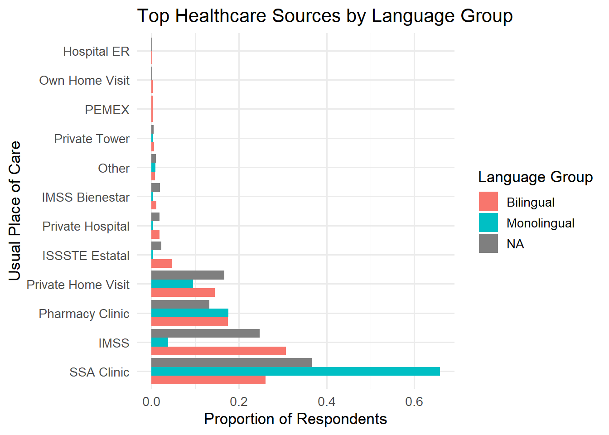

| Table 1. Summary Statistics of Key Variables | ||||
|---|---|---|---|---|
| Variable | Mean | SD | Min | Max |
| monolingual | 0.01 | 0.08 | 0.00 | 1.00 |
| tier2care | 0.45 | 0.50 | 0.00 | 1.00 |
| escolaridad | 3.69 | 2.79 | 0.00 | 12.00 |
| ingreso | 2.29 | 1.79 | 1.00 | 9.00 |
| derechohabiencia | 0.47 | 0.50 | 0.00 | 1.00 |
| area | 0.24 | 0.43 | 0.00 | 1.00 |
Linguistic Exclusion and Health Equity: Indigenous Language as a Barrier to Formal Healthcare in Mexico
Introduction
In Mexico, healthcare disparities between Indigenous and non-Indigenous populations are a long-standing public health concern. These disparities are often attributed to systemic barriers, including geographic isolation, poverty, and discrimination in public institutions. However, one of the most persistent and unexplored drivers of healthcare inequality is language. Specifically, the gap between healthcare institutions that operate almost exclusively in Spanish and the millions of individuals who primarily speak one of Mexico’s 68 recognized Indigenous languages. While many studies focus on the ethnic aspect of exclusion, few have analyzed how variation in Spanish proficiency within Indigenous-language speakers affects access to care.
Existing research has shown that Indigenous-language speakers face significant linguistic and cultural barriers in the Mexican healthcare system. For instance, one study found that areas with higher concentrations of Indigenous-language speakers have systematically lower hospital use, even after controlling for income and place of residence (Garza & Miguel, 2025). Similarly, when studying Nahuatl-speaking communities in Puebla, it was found that many patients avoid hospitals, not due to cost or distance, but rather because of an inability to communicate with medical staff and a resulting lack of trust in the system (Haimovich & Márquez Mora, 2021). Recent research further revealed that Indigenous-language speakers had significantly lower COVID-19 vaccine uptake, citing fear and negative beliefs rather than access barriers as primary reasons for non-vaccination, despite overall high rates of vaccine availability (Abascal Miguel et al., 2024).
These studies provide necessary context on the barriers faced by Indigenous communities; however, they typically treat the Indigenous population as internally homogeneous. In reality, there is significant variation in Spanish fluency among speakers of Indigenous languages. Some are bilingual, capable of navigating Spanish-speaking institutions, while others are monolingual, relying exclusively on Indigenous languages in daily life. This linguistic distinction matters. It may explain significant within-group differences in healthcare decisions that broader Indigenous vs. non-Indigenous comparisons overlook.
This project focuses specifically on this understudied divide: the difference in healthcare access between monolingual and bilingual Indigenous-language speakers in Mexico. It uses data from the 2022 results of the nationally representative Encuesta Nacional de Salud y Nutrición (ENSANUT), or "National Survey of Health and Nutrition" to examine whether individuals who speak only an Indigenous language are more likely to access lower-tier public healthcare services, such as SSA clinics (healthcare facilities operated by Mexico’s Ministry of Health) and IMSS Bienestar (public healthcare program in Mexico that provides free medical services to the uninsured), compared to their bilingual peers.
Although informal care is often assumed to play a significant role in Indigenous healthcare use, the data suggest that this is not the primary driver of observed disparities. Utilization of traditional or alternative providers, such as curanderos, homeopaths, or midwives, is rare within the sample. Instead, the more revealing pattern lies in the type and tier of formal care accessed. While bilingual speakers access a diverse range of services, including pharmacy-affiliated clinics, private hospitals, and employer-based care, monolingual (Indigenous language only) speakers are far more concentrated in basic public facilities that tend to be less administratively complex and more linguistically accessible. These settings may be more geographically proximate and culturally familiar, however, they are also often under-resourced, overburdened, and limited in scope. If monolingual speakers are disproportionately reliant on such facilities, it raises concerns about the equity and effectiveness of healthcare delivery in Indigenous communities.
By narrowing the analysis to Indigenous-language speakers and distinguishing between monolingual and bilingual individuals, this project offers a more precise understanding of how language operates as a structural determinant of healthcare access. It also contributes to policy conversations around linguistic inclusion, suggesting that efforts to close healthcare gaps must go beyond physical access and financial protection to include language accessibility as a central component of equity. In doing so, this study asks not just whether Indigenous people face barriers to care, but which Indigenous people, and why.
Theory and Hypothesis
Language shapes individuals’ ability to navigate institutional complexity. Access to higher-tier care depends not only on physical availability or insurance coverage, but on the capacity to complete administrative procedures, communicate with providers, and move across institutions. Within Indigenous communities, variation in Spanish proficiency therefore produces systematic differences in healthcare use. Bilingual speakers can access a broader range of providers, while monolingual Indigenous-language speakers face constrained options. By comparing monolingual and bilingual Indigenous-language speakers, the analysis isolates the role of language proficiency while holding ethnicity, income, and location constant.
Hypothesis: Among Indigenous-language speakers in Mexico, individuals who do not speak Spanish (monolinguals) are more likely to rely on lower-tier or basic public healthcare services than bilingual speakers, due to the linguistic inaccessibility of more complex care institutions, indicating that language proficiency, beyond ethnic identity, produces meaningful within-group variation in access.
This hypothesis is both falsifiable and policy-relevant. If monolingual speakers are found to use a narrower and less institutionally diverse range of providers, it would suggest that improving language accessibility should be a central focus in addressing Indigenous health disparities. Policies such as expanded translation services, Indigenous-language outreach, and training of bilingual medical staff would be critical steps toward equitable care.
Research Design
The data drawn for this analysis from ENSANUT (2022) was collected by Mexico’s Instituto Nacional de Salud Pública, or "National Institute of Public Health". ENSANUT is a nationally representative cross-sectional survey that uses a probabilistic, stratified sampling design to produce reliable health and demographic estimates at the national, regional, and urban/rural levels. The dataset includes extensive information on healthcare usage, language use, education, household income, and access to insurance, making it suitable for examining how structural factors influence healthcare-seeking behavior (ENSANUT 2022).
Significant data cleaning was required to make the ENSANUT 2022 data analyzable. The raw files were initially formatted using inconsistent semicolon delimiters, which caused structural issues when importing, requiring manual inspection and correction of line breaks, column alignment, and malformed headers. In addition, variable labels were not standardized across files, requiring manual relabeling and synchronization. Once the formatting was corrected, two distinct datasets, one at the individual level and the other at the household level, had to be merged using a unique identifier. This step was further complicated by type mismatches and missing identifiers, which required additional transformations to align variable types and preserve complete observations for analysis. Beyond the research findings, a significant contribution of this project is the creation of a cleaner, more accessible version of ENSANUT 2022 data that can be reused for future analysis and exploration.
The unit of analysis of the ENSANUT is the individual respondent. For this study, the sample is restricted to adults aged 18 and older who report speaking an Indigenous language, using item H0311 ( ¿Habla alguna lengua indígena?/ Do you speak an Indigenous language? ). While ENSANUT does not directly ask about ethnic identity, both INSP and Mexico’s national statistics agency (INEGI) routinely use Indigenous language use as an indicator for Indigenous identity in population-level studies (Villarreal, 2014). This approach is standard in health equity research and allows for the analysis of intra-group differences within Indigenous populations.
Within this sample, respondents are divided into two groups using item H0312 (¿Habla también español?/ Do you also speak Spanish? ): - Monolinguals: Speak an Indigenous language but not Spanish (H0311 = yes, H0312 = no). - Bilinguals: Speak both an Indigenous language and Spanish (H0311 = yes, H0312 = yes). A binary variable monolingual is created to distinguish these groups, coded as 1 for monolinguals and 0 for bilinguals. This distinction enables testing whether the absence of Spanish proficiency, independent of shared Indigenous identity, affects patterns of healthcare access.
The dependent variable is the type of healthcare institution the respondent usually visits when facing a health need. Item H0309 asks: “Cuando tiene una necesidad de salud, ¿en dónde se atiende usualmente?/ When you have a health need, where do you usually seek care?" The responses are grouped into three categories based on institutional complexity and accessibility: - Tier 1 (High-Complexity Institutional Care): IMSS, ISSSTE, PEMEX, Defense, private hospitals. - Tier 2 (Basic Public Care): SSA clinics, IMSS Bienestar, and DIF. - Tier 3 (Non-Institutional/Alternative Care): pharmacy consults, home-based care, traditional healers, homeopaths.
Tier 1 institutions represent the most complex, well-resourced, and bureaucratically integrated parts of Mexico’s healthcare system, offering specialized care and requiring formal employment or affiliation for access (World Health Organization, 2020). Tier 2 includes publicly funded services which are designed for the uninsured, and focus on basic care delivery in marginalized or rural communities (International Trade Administration, 2023). Tier 3 encompasses informal and non-institutional options that are often sought due to cultural preferences, affordability, or limited trust in formal providers (World Health Organization, 2020). This categorization is consistent with established public health literature on Mexico’s healthcare segmentation, allowing for a consistent analysis.
For the purposes of hypothesis testing, a binary variable tier2care is constructed: 1 if the respondent uses Tier 2 care, 0 if they use any other tier. Tier 2 institutions are the most accessible segment of the formal healthcare system for uninsured and marginalized populations, unlike Tier 1 institutions, which require formal employment or institutional affiliation. Tier 2 services are publicly funded, universally available, and often serve as the default option in rural or low-resource settings. They also tend to have fewer bureaucratic requirements, making them more navigable for individuals with limited Spanish proficiency, low literacy, or unfamiliarity with state institutions. By focusing on Tier 2 care, this analysis identifies a critical point at which monolingual Indigenous-language speakers may retain access to institutional services but are more likely to be diverted from higher-complexity Tier 1 care due to structural and linguistic barriers. This tier serves as a formal yet accessible middle ground, allowing the analysis to test whether language proficiency affects reliance on this level of care.
To reduce omitted variable bias, the model includes the following control variables: - Education level (H0317A): Ordinal variable capturing the highest grade completed (no schooling to university). - Income bracket: Derived from ENSANUT’s household income sections (I and VI), capturing relative socioeconomic status. - Insurance status (H0310A): Whether the respondent has formal healthcare coverage through IMSS, ISSSTE, or other systems. - Urban/rural residence: Binary variable indicating household location type. These controls account for structural drivers of healthcare access, such as affordability, geographic proximity, and institutional affiliation, that could confound the relationship between language ability and healthcare-seeking behavior.
Summary Statistics
Table 1 presents summary statistics for key variables used in the analysis. The proportion of monolingual Indigenous-language speakers is relatively low (1%), consistent with national estimates, but analytically significant due to its heightened vulnerability. Approximately 45% of respondents use Tier 2 care, making it the most common care pathway in the sample. The average education level (escolaridad) is 3.7 years, indicating low formal schooling, and ingreso (income decile) centers around the lower third of the distribution. Nearly half of respondents report derechohabiencia (health insurance coverage), and about one-quarter live in rural areas (area = 1).
The main model is a logistic regression estimating the probability of Tier 2 care usage:
\[ \text{logit}(\text{Pr}(\text{Tier2Care}_i = 1)) = \beta_0 + \beta_1 \cdot \text{Monolingual}_i + \beta_2 \cdot \text{Escolaridad}_i + \beta_3 \cdot \text{Ingreso}_i + \beta_4 \cdot \text{Derechohabiencia}_i + \beta_5 \cdot \text{Area}_i + \epsilon_i \]
Empirical Extension
To test the robustness of the relationship between language proficiency and healthcare access, an empirical extension that controls for state-level variation in healthcare availability and demographic composition is conducted. Specifically, respondents from Oaxaca, the state with the highest proportion of Indigenous-language speakers, are compared to a pooled group of three states: Mexico City (CDMX), Jalisco, and Nuevo León, which are among the least Indigenous and most economically developed in the country. This design enables the assessment of whether the observed relationship between monolingualism and Tier 2 care persists even when accounting for regional differences in healthcare infrastructure and demographic context.
According to INEGI, over 30% of Oaxaca’s population speaks an Indigenous language, making it a focal point for understanding linguistic access barriers in public services. In contrast, the comparison states represent more urbanized and better-resourced settings, with less than 1% of the population speaking an Indigenous language (INEGI, 2022). By holding the analytic framework constant while changing the geographic context, this extension tests whether the monolingual–bilingual gap in Tier 2 care use is context-sensitive or a generalizable pattern. If the association between monolingualism and greater reliance on Tier 2 care remains strong in Oaxaca but diminishes or disappears in the pooled states, it would suggest that linguistic exclusion interacts with local service structures. On the other hand, if the pattern holds across both contexts, it reinforces the argument that language proficiency alone, independent of geography, systematically conditions access to institutional care. In either case, this extension offers deeper insight into the mechanisms of health inequity in Mexico and underscores the need for linguistically responsive public health policies in both high- and low-Indigenous-density regions.
Findings
To visually explore how healthcare-seeking behavior differs by language proficiency, Figure 1 plots the distribution of respondents’ usual healthcare sources by language group.

Figure 1. Usual Healthcare Source by Language Group (ENSANUT 2022). This figure shows the proportion of respondents who report each type of healthcare facility as their usual source of care by language group (monolingual, bilingual, and not reported). Monolingual Indigenous-language speakers overwhelmingly report using SSA clinics, with over 60% relying on this Tier 2 service. Their use of IMSS, a Tier 1 institution, is significantly lower than that of bilingual speakers. Additionally, monolingual speakers show limited reliance on private hospitals or alternative options like pharmacy clinics and home visits. These patterns support the hypothesis that language proficiency limits the navigation of more complex or bureaucratically demanding institutions.
General Model
To formally test the proposed hypothesis, a logistic regression model using monolingual status and relevant covariates is estimated, with its results being presented in Table 1.
| National Model | |
|---|---|
| (Intercept) | 1.385*** |
| (0.031) | |
| monolingual | 0.777*** |
| (0.210) | |
| escolaridad | -0.072*** |
| (0.005) | |
| ingreso | -0.094*** |
| (0.008) | |
| derechohabiencia | -2.806*** |
| (0.029) | |
| area | 0.240*** |
| (0.033) | |
| Num.Obs. | 35085 |
The results strongly support the hypothesis that monolingual Indigenous-language speakers are more likely to rely on Tier 2 care. The coefficient on the monolingual variable is 0.777 and statistically significant (p < 0.001), indicating that, holding other factors constant, monolingual individuals have substantially higher odds of using basic public care services such as SSA clinics or IMSS-Bienestar. This finding aligns with the descriptive trends shown earlier and supports the claim that language proficiency is a key determinant of how individuals access the healthcare system.
Other covariates also behave as expected. Education (escolaridad) and income (ingreso) are both negatively associated with Tier 2 care use, suggesting that individuals with higher socioeconomic status are more likely to navigate into higher-tier or private care options. The coefficient on derechohabiencia, which represents having formal health insurance, is strongly negative (-2.806), further confirming that uninsured individuals disproportionately rely on Tier 2 services. The positive effect of area, which flags rural respondents, also aligns with existing literature showing that Tier 2 clinics are the most accessible public health infrastructure in rural zones.
Overall, the model affirms that language remains a significant barrier to institutional navigation, even when controlling for education, income, insurance coverage, and rurality. The magnitude and significance of the monolingual coefficient support the central claim that linguistic exclusion, not just structural poverty, directs individuals into lower-tier care.
Adjusted Model for Region
To assess whether the relationship between language and care tier varies by context, the regression model is adjusted for geographic region, comparing Oaxaca to Jalisco, CDMX, and Nuevo León. Table 2 presents the results of this empirical extension.
| National | Oaxaca | Jalisco, CDMX & Nuevo León | |
|---|---|---|---|
| + p < 0.1, * p < 0.05, ** p < 0.01, *** p < 0.001 | |||
| (Intercept) | 1.385*** | 0.668*** | 1.233*** |
| (0.031) | (0.179) | (0.080) | |
| monolingual | 0.777*** | 1.278** | -11.876 |
| (0.210) | (0.399) | (195.872) | |
| escolaridad | -0.072*** | -0.055+ | -0.082*** |
| (0.005) | (0.030) | (0.013) | |
| ingreso | -0.094*** | -0.169* | -0.099*** |
| (0.008) | (0.068) | (0.018) | |
| derechohabiencia | -2.806*** | -1.238*** | -2.835*** |
| (0.029) | (0.186) | (0.073) | |
| area | 0.240*** | 0.246+ | 0.506** |
| (0.033) | (0.146) | (0.180) | |
| Num.Obs. | 35085 | 976 | 5697 |
| AIC | 33549.6 | 1233.5 | 5021.6 |
| BIC | 33600.4 | 1262.8 | 5061.5 |
| Log.Lik. | -16768.782 | -610.747 | -2504.788 |
| RMSE | 0.39 | 0.47 | 0.37 |
The results of the regional models reinforce the interpretation that language proficiency meaningfully shapes healthcare access, but this relationship is highly context-dependent. In Oaxaca, the coefficient for monolingual is 1.278 and statistically significant at the 0.01 level. This suggests that in a context where Indigenous languages are more widely spoken, monolingual speakers are still significantly more likely to use Tier 2 public healthcare, even when controlling for income, education, insurance status, and rurality. This finding provides strong support for the hypothesis that linguistic exclusion plays a causal role in structuring access to institutional care, even in regions where Indigenous populations are demographically prominent.
In contrast, the coefficient for monolingual in the pooled Jalisco/CDMX/Nuevo León model is highly unstable and negative (-11.876), but not statistically significant. This is likely due to the extremely low number of monolingual respondents in these states, resulting in high standard errors and unreliable estimates. However, the lack of a meaningful effect in these states, combined with the positive and significant result in Oaxaca, strengthens the argument that language-based healthcare disparities are most visible where monolingual Indigenous individuals are present in sufficient numbers to navigate the system, yet still face structural barriers.
Overall, this geographic comparison shows that the association between language and Tier 2 care use persists across regions and is not driven solely by national averages. It highlights how linguistic exclusion operates differently depending on regional health infrastructure and demographic composition.
Discussion and Policy Implications
This project provides strong evidence that language proficiency is a critical factor shaping access to institutional healthcare among Indigenous-language speakers in Mexico. The national regression model showed that monolingual individuals are significantly more likely to rely on Tier 2 public services, even when controlling for education, income, insurance status, and rurality. This pattern suggests that language acts as a structural filter, guiding monolingual speakers toward lower-complexity providers that are easier to access and navigate. At the same time, it limits their access to higher-tier institutions such as IMSS or ISSSTE. These findings are further supported by the empirical extension, which demonstrated that the effect of monolingualism is both statistically and substantively significant in Oaxaca, the state with the highest density of Indigenous-language speakers. In contrast, the absence of a measurable effect in Jalisco, CDMX, and Nuevo León (states with very few monolingual individuals) highlights the context-specific nature of linguistic exclusion.
The implications of this are clear: public health access in Mexico cannot be meaningfully improved for Indigenous populations without directly addressing the language gap. While Mexico’s health system has made strides toward universal coverage, linguistic inclusion remains an unaddressed barrier to equitable care. Policy efforts should prioritize expanding multilingual services, including the hiring and training of Indigenous-language interpreters, culturally competent healthcare workers, and localized outreach strategies tailored to linguistically isolated communities.
More broadly, this project contributes to health equity research by demonstrating that disparities are not only inter-group (Indigenous vs. non-Indigenous) but also intra-group, particularly when linguistic ability is considered. Future research could strengthen these findings by incorporating qualitative data, such as provider-patient communication breakdowns, or by leveraging longitudinal data to examine how language access influences health outcomes over time. Ultimately, this analysis demonstrates that language is not just a matter of cultural identity, but a key structural determinant of access within Mexico’s healthcare system.
References
Abascal Miguel, M., Flores, J., & García, R. M. (2024). Language barriers and vaccine uptake: COVID-19 disparities among indigenous language speakers in mexico. PLOS Global Public Health, 4(2), e0002921. https://doi.org/10.1371/journal.pgph.0002921
Garza, M., & Miguel, L. A. (2025). Health disparities among indigenous populations in latin america: A scoping review. International Journal for Equity in Health, 24(1), 119. https://doi.org/10.1186/s12939-025-02495-2
Haimovich, P., & Márquez Mora, P. (2021). Language, culture and healthcare: Nahuatl-speaking communities in sierra norte de puebla. Multilingua, 40(1), 27–47. https://doi.org/10.1515/multi-2020-0027
INEGI. (2022). Estadísticas a propósito del día internacional de los pueblos indígenas (comunicado de prensa núm. 430/22). Instituto Nacional de Estadística y Geografía. https://www.inegi.org.mx/contenidos/saladeprensa/aproposito/2022/EAP_PueblosInd22.pdf
International Trade Administration. (2023). Mexico - healthcare products & services. https://www.trade.gov/country-commercial-guides/mexico-healthcare-products-services
Villarreal, A. (2014). Ethnic identification and its consequences for measuring inequality in mexico. American Sociological Review, 79(4), 775–806. https://doi.org/10.1177/0003122414541960
World Health Organization. (2020). Health system review: mexico. WHO Regional Office for Europe. https://iris.who.int/bitstream/handle/10665/334334/HiT-22-2-2020-eng.pdf